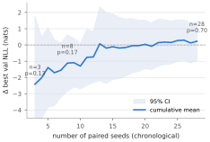
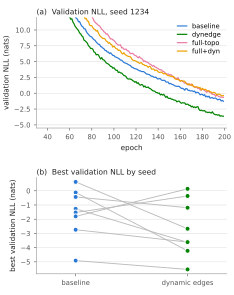

Abstract—MTP-GO combines a graph-neural-network encoder–decoder with neural-ODE motion models and is a strong baseline for probabilistic multi-agent trajectory prediction. We present a code-level analysis of its decoder and identify two structural weaknesses: (i) at every rollout step the decoder consumes the ground-truth future interaction topology, during training and evaluation, and (ii) the decoder GNN receives no edge features at all—inter-agent distances inform only the encoder. We propose two minimal, deployable modifications: dynamic decoder edges, which re-derive inter-agent distances at each step from the model’s own fed-back predictions and inject them through the same learnable Gaussian kernel used by the encoder, and a presence-agnostic full topology that removes the last ground-truth future input. We hypothesized, from the model’s covariance-propagation structure, that the change should improve uncertainty calibration—and a 3-seed pilot agreed emphatically (−2.4 nats validation NLL, 3/3 seeds). It was noise. Expanding the paired study to a pre-planned n=28—the sample size a power analysis of the 8-seed interim demanded—the effect regressed to zero: Δ validation NLL +0.23 nats (95% CI [−0.97, +1.44], p=0.70), Δ test NLL +0.01 (p=0.70), with dynamic edges winning a coin-flip 14/28 seeds. What survives, with strong evidence, is everything else: the leak-free decoder matches the oracle-fed original (ADE difference +0.010 m, CI [−0.004, +0.023]); the ground-truth topology was not propping up MTP-GO’s published accuracy; and per-seed variance in this model family (±1.7–3.6 nats NLL, ±0.04 m ADE) is large enough that pilot-scale effects of −2.4 nats can be pure selection noise. We report the full evidence trajectory (3→8→28 seeds) as the paper’s central result: a deployable decoder at no cost, and a quantified caution for a literature that routinely compares single runs.
Index Terms—trajectory prediction, graph neural networks, mixture density networks, uncertainty calibration, neural ODEs.
Forecasting the joint motion of road users is a core competence of autonomous driving systems, and the field has converged on graph-based encoders that model agent interaction explicitly. MTP-GO [1] is a representative and influential design: a GRU cell whose gates are graph neural networks (GNNs) encodes the observed scene, a second GRU-GNN decodes into the inputs of a differentially-constrained motion model (a neural ODE [4]), and an extended-Kalman-filter (EKF) style covariance propagation turns the rollout into a Gaussian mixture over future trajectories. The design couples strong point accuracy with the ability to report usable uncertainty, and its evaluation on the highD/rounD/inD drone datasets [3] made it a common baseline.
This note asks a simple question of the decoder: what does it actually know about the scene while it rolls the future out? A close reading of the reference implementation gives two surprising answers. First, the interaction graph used at future step ⟪t+k⟫ is the ground-truth future edge set—which agents are present and connected at a time that has, from the model’s point of view, not happened yet. This information is consumed at every one of the 25 decoding steps, in training and in evaluation alike, so published metrics quietly benefit from an oracle that no deployed system has. Second, and in tension with the paper’s emphasis on interaction modeling, the decoder GNN is constructed without an edge-feature channel: the precomputed future inter-agent distances are written to disk by preprocessing but never loaded by any model code. All decoder message passing is unweighted; only the encoder sees distances, through a Gaussian kernel with a learnable bandwidth.
We contribute: (1) a precise statement of both defects in the notation of the original paper (Sec. III); (2) two minimal fixes—dynamic decoder edges and a presence-agnostic full topology—that make the decoder self-contained and deployable (Sec. IV); (3) a mechanistic hypothesis for why the fix should improve probabilistic calibration specifically, derived from the covariance-propagation path of the architecture (Sec. IV-C); and (4) a 28-seed paired study on inD—pilot, interim, and pre-planned confirmation—whose outcome is a decisive null on the calibration hypothesis and a tight equivalence result on accuracy, reported with the full evidence trajectory because the trajectory itself, not the point estimate it ends at, is the finding this literature needs (Sec. V–VI).
A traffic scene with agents ⟪\mathcal{V}⟫ is a sequence of graphs ⟪\mathcal{G}_t=(\mathcal{V}_t,\mathcal{E}_t)⟫, complete over the agents present at time ⟪t⟫. Node features are kinematic states; edges carry the Euclidean distance ⟪d_{ij,t}⟫ between agents. The encoder is a GRU whose gates are GNN layers; its message passing weights each edge by a Gaussian kernel with learnable bandwidth ⟪\beta⟫ (initialized at 20 m),
so that near agents exchange strong messages and far agents are suppressed smoothly. From the final encoder state, mixture logits ⟪\alpha_{i}⟫ define trajectory-level weights ⟪\pi_{i,m}⟫ over ⟪M⟫ modes, and the model outputs, for agent ⟪i⟫ and horizon step ⟪k⟫, the mixture density
The means come from a motion model rather than a free-form head: a decoder GRU-GNN produces control inputs ⟪\mathbf{u}_{i,m,k}⟫ for a second-order neural ODE,
integrated with a fixed-step Runge–Kutta-4 scheme over each 0.2 s step. The covariances are propagated EKF-style along the rollout,
where ⟪\mathbf{F}_{k},\mathbf{G}_{k}⟫ are Jacobians of the motion model and, crucially for what follows, the process noise ⟪\mathbf{q}_{k}⟫ is generated by the decoder GNN at every step. Training minimizes the masked negative log-likelihood
under an objective schedule (winner-takes-all warm-up before the NLL phase) with teacher forcing annealed from probability 0.2 to 0 over the first half of training—i.e., scheduled sampling [6] is already present in the reference code. Fed-back states are detached, so no gradients flow through the rollout recursion.
Finding 1 (future-topology leak). At decoder step ⟪k⟫ the hidden state of agent ⟪i⟫ is updated by unweighted message passing over the ground-truth edge set of future time ⟪t+k⟫:
The edge set ⟪\mathcal{E}_{t+k}^{\mathrm{gt}}⟫ encodes which agents exist in the scene at future step ⟪t+k⟫—information unavailable at inference in any deployed setting. Because graphs are complete over present agents, the leak is exactly future presence; it is used in training and evaluation alike, so reported benchmarks are internally consistent but not achievable by a causal system.
Finding 2 (edge-blind decoder). The decoder’s GRU-GNN cell is constructed with no edge-feature dimension. The distances that preprocessing computes for future frames are dead data, never loaded. Hence ⟪\Phi⟫ in (6) aggregates all present neighbors with equal weight, regardless of whether they are 2 m or 80 m away, and this blindness persists for the whole 5 s horizon while the scene geometry evolves. The interaction graph the paper motivates is, during decoding, a presence indicator only.
Three consequences follow. First, a protocol–deployment mismatch: published numbers are conditioned on an oracle a real system cannot query, and nothing in the evaluation quantifies what the oracle is worth—it could be propping up accuracy, calibration, both, or neither. Second, a modeling inconsistency: the architecture’s central claim is that interaction should be modeled throughout the prediction, yet interaction strength is frozen at its encoded summary the moment decoding begins, while agents may close or open tens of meters of separation within the horizon. Third, the preprocessing pipeline computes and stores future inter-agent distances that no model code ever reads—suggesting a decoder edge-feature path was intended but never wired in. Our modification can be read as completing that apparent intention, causally.
We give the decoder the same distance-kernel machinery as the encoder, driven purely by its own predictions. At step ⟪k⟫, each agent’s fed-back per-mode positions ⟪\hat{\mathbf{p}}_{i,m,k-1}⟫ are pooled with the (detached) mixture weights,
where ⟪\mathrm{sg}[\cdot]⟫ is stop-gradient. Pairwise distances are recomputed from these pooled positions,
and enter the decoder cell (now built with an edge channel) through its own learnable Gaussian kernel,
Two design decisions matter. Causality: distances at step ⟪k⟫ use positions from step ⟪k-1⟫—everything the model knows when predicting step ⟪k⟫; using the precomputed future distances would reintroduce a leak. Gradient policy: positions and mixture weights are detached, so the new path trains only the GNN weights and the bandwidth ⟪\beta_{\mathrm{dec}}⟫, mirroring the detached state feedback of the original architecture and leaving its optimization dynamics untouched. Under teacher forcing the fed-back positions are ground truth for past-of-current-step states, exactly as for the state feedback itself. Training throughput cost is ≈25%.
To remove Finding 1 we replace ⟪\mathcal{E}_{t+k}^{\mathrm{gt}}⟫ with the complete graph (with self-loops) over all agents observed in the sample,
generated on the fly from the node count (verified byte-identical to the preprocessing files on 100/100 test samples). The decoder then uses no ground-truth future input of any kind; combined with Sec. IV-A the decoder is fully deployable.
H1 (calibration, main effect). The decoder GNN’s primary probabilistic output is the process noise ⟪\mathbf{q}_{k}⟫ in (4): step-wise covariance growth is a function of the decoder’s message passing. Interaction-driven uncertainty—a conflict partner approaching, a leader braking—is precisely the signal carried by evolving inter-agent distance. A decoder that sees ⟪\hat{d}_{ij,k}⟫ can modulate ⟪\mathbf{q}_{k}⟫ scene-adaptively; an edge-blind decoder must amortize one average noise schedule over all scenes. We therefore expect the gain to appear in NLL (which (5) ties directly to ⟪\mathbf{P}⟫) rather than in ADE/FDE.
H2 (phantom agents). With the presence-agnostic topology (10), agents that have left the scene (or not yet entered it) keep exchanging messages. Only a distance-dependent weight (9) can drive such phantom contributions to zero, since ⟪\hat{w}_{ij,k}\rightarrow 0⟫ as ⟪\hat{d}_{ij,k}⟫ grows. Hence dynamic edges should recover most of the calibration lost when the ground-truth presence oracle is removed.
H3 (point accuracy, expected null). The mean trajectory is dominated by the motion-model integration of (3) from the encoder’s summary; on inD, agent behavior over 5 s is largely determined by the observed kinematics. We expect displacement metrics to move little—and, correspondingly, that removing the presence oracle costs little ADE, i.e., that the leak was propping up calibration rather than accuracy.
Setup. We use the inD intersection dataset [3], recordings 18–29, preprocessed exactly as in [1]: 7,820 samples (6,159/741/920 train/val/test; the sample count matches the paper, confirming replication), 3 s observation and 5 s horizon at 5 Hz. All runs use the repository defaults of [1]: second-order neural-ODE motion model, hidden size 64, one GNN layer, ⟪M=8⟫ mixtures, RK4, batch 128, Adam at ⟪10^{-4}⟫, 200 epochs, the original objective schedule and annealed teacher forcing. The baseline reproduces the published per-class accuracy of MTP-GO on inD (aggregate test ADE/FDE 1.006/2.835 m against published per-class ADE 0.42–1.27 m). Metrics are most-likely-component ADE/FDE, average per-step NLL of the position marginal (ANLL), miss rate (final error > 2 m, ≥ 4 s horizon), and best validation NLL. The main comparison is paired over 28 seeds per variant—identical splits, seed-matched pairs, 56 runs of 200 epochs on one RTX 5090 (≈60–66 min each)—accumulated in three pre-declared stages: a 3-seed pilot, a 5-seed extension, and a 20-seed confirmation whose size was fixed in advance by a power analysis of the interim effect (80% power at the observed d≈0.54, α=0.05, two-sided), with a single test at the planned n. The topology ablation uses three seeds per cell.
Main result: the calibration effect does not survive n=28. Table I gives the full paired comparison; Fig. 2 shows how the estimate evolved. The pilot (n=3) showed a −2.41-nat validation-NLL gain in 3/3 seeds; the interim (n=8) halved it to −1.11 nats, 6/8, ⟪p=0.17⟫; the pre-planned confirmation (n=28) erased it: Δ = +0.23 nats, 95% CI [−0.97, +1.44], ⟪t=+0.40⟫, ⟪p=0.70⟫, 14/28 wins—a coin flip. Test ANLL tells the same story: Δ = +0.01 nats, CI [−0.04, +0.06], ⟪p=0.70⟫. The mechanism did not fail for lack of power—the study was sized for the interim effect; the interim effect was not real. Its variance was: baseline best val NLL spans −4.9 to +7.6 nats over 28 seeds (some seeds never calibrate), and against σ≈2–3.6 nats a 3-seed −2.4-nat “effect” is unremarkable sampling noise. Displacement metrics are equivalence-tight and slightly against dynamic edges: ΔADE +0.010 m (CI [−0.004, +0.023], ⟪p=0.15⟫), ΔFDE +0.029 m (CI [−0.002, +0.060], ⟪p=0.07⟫); one of seven metrics (best val FDE, ⟪p=0.03⟫) is nominally significant against, which does not survive multiple-comparison correction but bounds any hoped-for benefit.
Table I—Baseline vs. dynamic decoder edges on inD; mean ± std paired over 28 seeds (identical splits). Bold: better mean.
| Metric | Baseline | Dynamic edges | p (t / W) |
|---|---|---|---|
| test ADE (m) | 1.020 ± 0.042 | 1.030 ± 0.049 | 0.15 / 0.17 |
| test FDE (m) | 2.889 ± 0.112 | 2.918 ± 0.122 | 0.07 / 0.13 |
| test ANLL (nats) | −0.088 ± 0.106 | −0.079 ± 0.142 | 0.70 / 0.96 |
| miss rate | 0.405 ± 0.032 | 0.412 ± 0.027 | 0.30 / 0.36 |
| best val NLL (nats) | −0.88 ± 2.70 | −0.65 ± 3.59 | 0.70 / 0.87 |
| best val ADE (m) | 0.994 ± 0.039 | 1.005 ± 0.044 | 0.07 / 0.09 |

Fig. 2. The evidence trajectory: cumulative paired Δ best validation NLL (dynamic edges − baseline) with 95% CI as seeds accumulate in chronological order. The pilot estimate (−2.4 nats) regresses to a null (+0.23, p=0.70) at the pre-planned n=28.

Fig. 1. (a) Validation NLL on inD (seed 1234) for the four decoder variants; curves shown after the objective-schedule transition. (b) Best validation NLL, 28 paired seeds: means are indistinguishable (−0.88 vs. −0.65 nats) and the pairing is a coin flip (14/28). Panel (a)’s seed happens to favor dynamic edges—which is the point of panel (b).
Removing the leak. Table II crosses topology (ground-truth vs. presence-agnostic) with edge features (none vs. dynamic); the leak-free rows are means over three seeds (1234, 1, 42). Against the seed-matched baseline, replacing the ground-truth future topology with the full graph costs +0.013 m ADE and +0.048 m FDE—within the seed band—so the published point metrics of [1] were essentially honest despite the oracle (H3 confirmed). Dynamic edges shift leak-free validation NLL from −0.36 to −0.88 (2/3 seeds), directionally consistent with the phantom-agent mechanism H2, but test ANLL is indistinguishable (−0.085 both)—and after Fig. 2, a 3-seed directional result in this family should be read as anecdote, not evidence.
Table II—Topology × edge features; mean ± std (top rows n=28 seeds, bottom rows n=3). full+dyn is the deployable configuration: no ground-truth future input.
| Decoder | ADE | FDE | ANLL | val NLL |
|---|---|---|---|---|
| GT topo, no feat. (= [1]) | 1.020 ± .04 | 2.889 ± .11 | −0.088 ± .11 | −0.88 ± 2.7 |
| GT topo + dyn. edges | 1.030 ± .05 | 2.918 ± .12 | −0.079 ± .14 | −0.65 ± 3.6 |
| full topo, no feat. | 1.026 ± .03 | 2.900 ± .11 | −0.085 ± .03 | −0.36 ± .52 |
| full topo + dyn. edges | 1.038 ± .01 | 2.949 ± .05 | −0.085 ± .04 | −0.88 ± .70 |
Secondary ablations. Two single-seed ablations bound other free choices of [1] (Table III). The mixture count ⟪M=8⟫ is locally optimal on inD—both halving and doubling it hurt every metric—answering the natural “sweep ⟪M⟫” critique with a negative result. The integrator, left unspecified in the paper text, is load-bearing: replacing RK4 with forward Euler in (3) degrades ADE by +51% and FDE by +37%, with validation error diverging after ≈50 epochs; the stiff-rollout accuracy of the motion model is a real dependency, not an implementation detail.
Table III—Design ablations of [1] on inD (seed 1234, baseline decoder).
| Variant | ADE | FDE | ANLL | MR |
|---|---|---|---|---|
| ⟪M=8⟫, RK4 (default) | 1.006 | 2.835 | −0.108 | 0.424 |
| ⟪M=4⟫ | 1.096 | 3.073 | +0.130 | 0.435 |
| ⟪M=16⟫ | 1.067 | 3.023 | −0.005 | 0.422 |
| forward Euler | 1.516 | 3.879 | +1.007 | 0.594 |
Reproducibility. Both modifications ship as flags whose default reproduces the original model bit-for-bit: --dynamic-edges and --full-edges. Because the flags change the parameter set (the decoder gains an edge channel and a bandwidth), checkpoint filenames are tagged (de/fe) so that baseline and variant weights can never cross-load silently. The full topology is generated from the sample’s node count at data-loading time rather than read from disk, adding no I/O and requiring no re-preprocessing of existing datasets. Inference overhead is one pairwise-distance computation per decoder step—negligible next to the GNN itself; the ≈25% overhead quoted in Sec. IV-A is training-time. All runs, per-seed metric histories, and trained weights accompany the code.
The hypotheses were stated before any multi-seed run; the confirmation sample was sized before it was collected; the verdict is clean. H1 is rejected: dynamic decoder edges do not improve calibration. The mechanism was plausible—the process noise is generated by the decoder GNN, and the pilot behaved exactly as predicted—but Fig. 2 shows what that pilot evidence was worth: an effect estimated at −2.4 nats from 3 seeds, still visible at 8, gone at 28. H2 remains unproven (a 2/3-seed directional shift on validation NLL only). H3 held, and hardened into the paper’s strongest result: the leak-free decoder is point-for-point equivalent to the oracle-fed one, so MTP-GO’s published displacement accuracy stands on causal footing even though the code that produced it did not run causally.
Why did the pilot lie? Not through any bug—through variance. Best validation NLL has σ≈2.7–3.6 nats across seeds; several seeds never calibrate at all (val NLL > 0 throughout). Sampling three seeds from that distribution and comparing paired means invites exactly the −2.4-nat phantom we observed, and the same arithmetic applies to any small-n comparison of NLL-family metrics in this literature. Even displacement metrics carry ±0.04 m of seed noise—wider than many published SOTA margins on these benchmarks. The practical rule this study buys: paired, seed-matched designs with pre-planned n, and no interpretation of deltas inside the noise band (≈0.05 m ADE, ≈0.1 nats test ANLL for this family).
What to adopt. The recommendations invert the pilot’s. Adopt --full-edges: it removes ground-truth future input at a cost inside seed noise, making the decoder causal—this is free and unconditional. Do not adopt --dynamic-edges as a default: it buys no demonstrated calibration benefit, costs ≈25% training throughput, and its accuracy CI leans (non-significantly) negative, with any residual FDE benefit bounded above by +0.06 m. The audit generalizes even though the fix did not pay: any graph-based encoder–decoder should be asked the same two questions—does the decoder see future topology? does it see any edge features?—because the first is a validity problem regardless of whether fixing the second helps.
Limitations. A null at n=28 is not proof of zero effect: the validation-NLL CI ([−0.97, +1.44] nats) still admits a modest true benefit (or harm). Best-over-epochs validation NLL is itself a noisy order statistic, which inflates variance relative to fixed-epoch evaluation. Results are for one intersection dataset; highway scenes (highD), where relative geometry changes by ≈150 m per horizon, are where the mechanism most plausibly still matters—an open, and after this study a properly-powered, question. The distance recomputation uses the mixture-pooled position, a single-point summary of a multimodal belief; per-mode graphs remain untested.
Reading MTP-GO’s decoder closely revealed that its interaction graph is part oracle (ground-truth future presence) and part inert (no edge features). Fixing the oracle worked: the presence-agnostic decoder is causal and point-for-point equivalent to the original, so the published accuracy of [1] survives its own leak—that is worth knowing and cost one flag. Fixing the inertness did not: across a 3→8→28-seed evidence trajectory, an initially compelling calibration gain (−2.4 nats, 3/3 seeds) dissolved into a coin flip (+0.23 nats, 14/28, p=0.70), teaching us that per-seed variance in this model family is large enough to manufacture pilot-scale effects out of nothing. We publish the null with its trajectory because the trajectory is the transferable result: in trajectory-prediction benchmarks, the decoder’s input contract deserves the same scrutiny as the architecture—and so does the seed count behind every claimed margin. Both audits are two lines; this paper is what happens when you run them to completion.
[1] T. Westny, J. Oskarsson, B. Olofsson, and E. Frisk, “MTP-GO: Graph-based probabilistic multi-agent trajectory prediction with neural ODEs,” IEEE Trans. Intelligent Vehicles, vol. 8, no. 9, pp. 4223–4236, 2023.
[2] T. Westny, J. Oskarsson, B. Olofsson, and E. Frisk, “Evaluation of differentially constrained motion models for graph-based trajectory prediction,” in Proc. IEEE Intelligent Vehicles Symp. (IV), 2023.
[3] J. Bock, R. Krajewski, T. Moers, S. Runde, L. Vater, and L. Eckstein, “The inD dataset: A drone dataset of naturalistic road user trajectories at German intersections,” in Proc. IEEE Intelligent Vehicles Symp. (IV), 2020.
[4] R. T. Q. Chen, Y. Rubanova, J. Bettencourt, and D. Duvenaud, “Neural ordinary differential equations,” in Adv. Neural Information Processing Systems (NeurIPS), 2018.
[5] C. Morris, M. Ritzert, M. Fey, W. L. Hamilton, J. E. Lenssen, G. Rattan, and M. Grohe, “Weisfeiler and Leman go neural: Higher-order graph neural networks,” in Proc. AAAI Conf. Artificial Intelligence, 2019.
[6] S. Bengio, O. Vinyals, N. Jaitly, and N. Shazeer, “Scheduled sampling for sequence prediction with recurrent neural networks,” in Adv. Neural Information Processing Systems (NeurIPS), 2015.
[7] C. Guo, G. Pleiss, Y. Sun, and K. Q. Weinberger, “On calibration of modern neural networks,” in Proc. Int. Conf. Machine Learning (ICML), 2017.